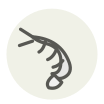

Brown shrimp
Crevette grise
| Latin name | Crangon crangon |
|---|---|
| Family | Shellfish & molluscs |
| Origin | North Sea sandflats and estuaries |
| Season (France) | May – October |
| Flavour | Briny · Nutty · Marine |
| Typical price (France) | 12–22 €/kg |
What it is
At Oostduinkerke on the Belgian coast fishermen still drag their nets through the surf behind Brabant draught horses, a practice UNESCO listed as intangible heritage in December 2013, and the catch goes into the pot on the beach. The shrimp is boiled within minutes because otherwise it goes to mush, which is why it reaches a kitchen already cooked and never raw.
In the kitchen
Peel them yourself and keep every head and shell: twenty minutes in melted butter over the lowest heat, then strain, and you have the shrimp butter that justifies the whole job. Never reheat the peeled tails — warm them in the sauce off the heat.
Goes with
Butter Lemon Parsley Egg Rye berries Tomato Chives
Also used with
In season alongside
Belon flat oyster Dog cockle Dulse Abalone Japanese abalone Clam
Something wrong here, or missing? Tell us